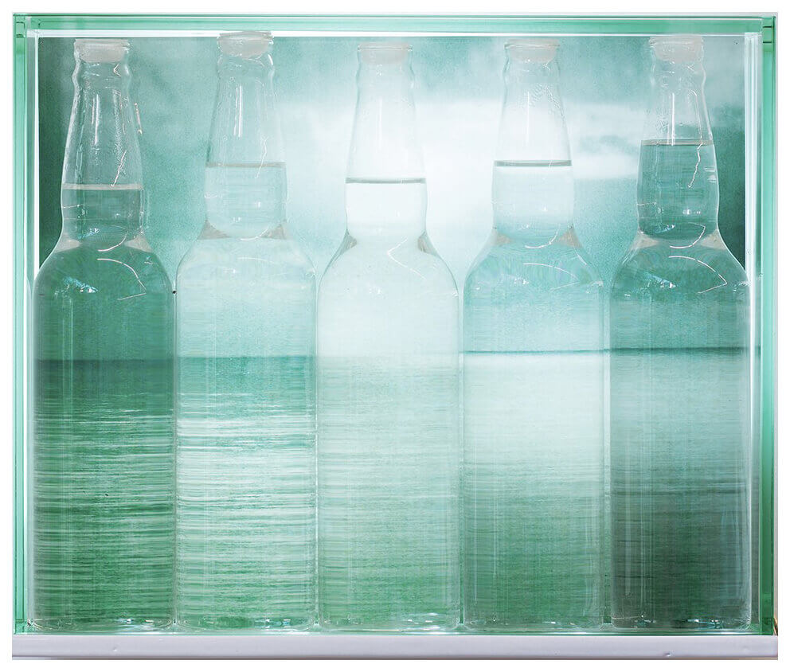
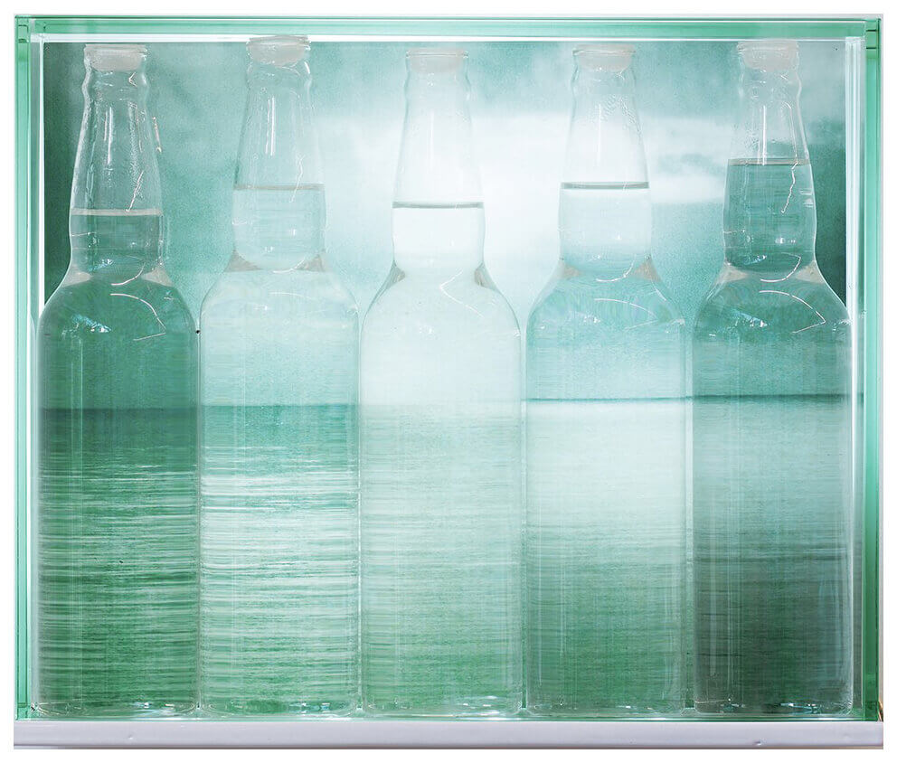
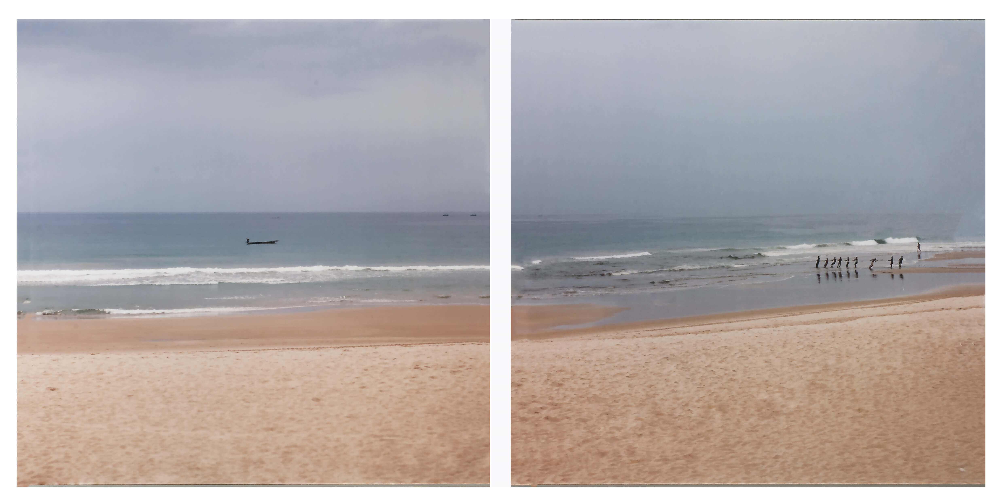
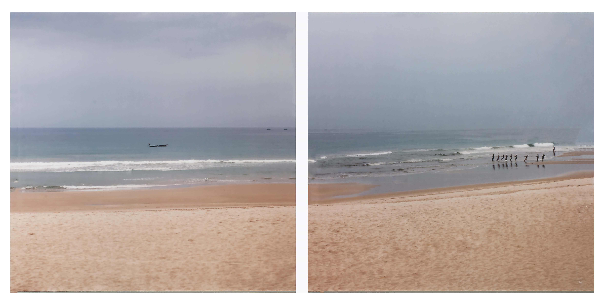
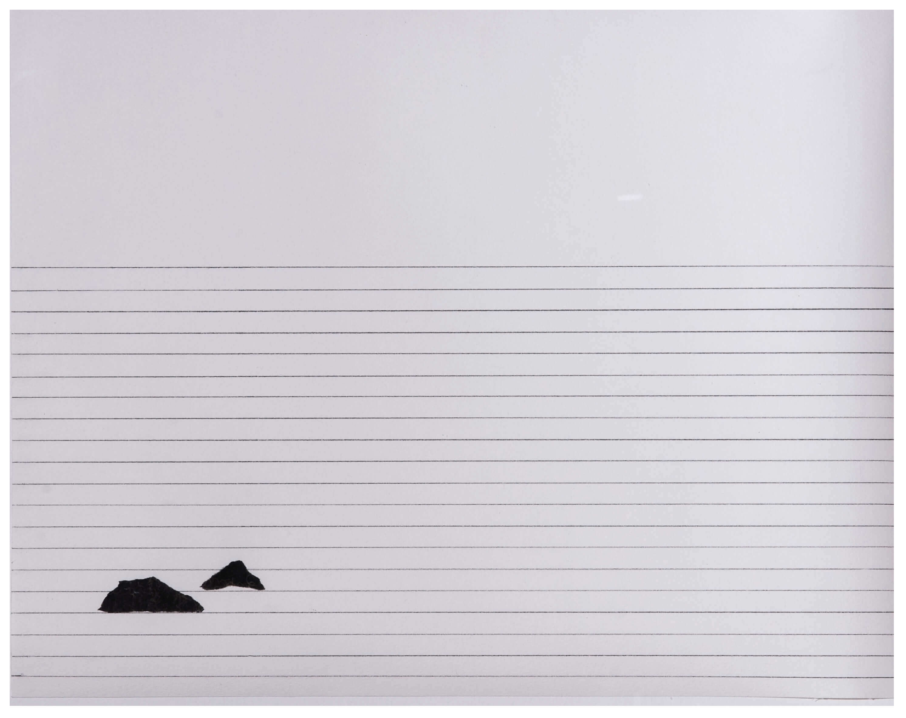
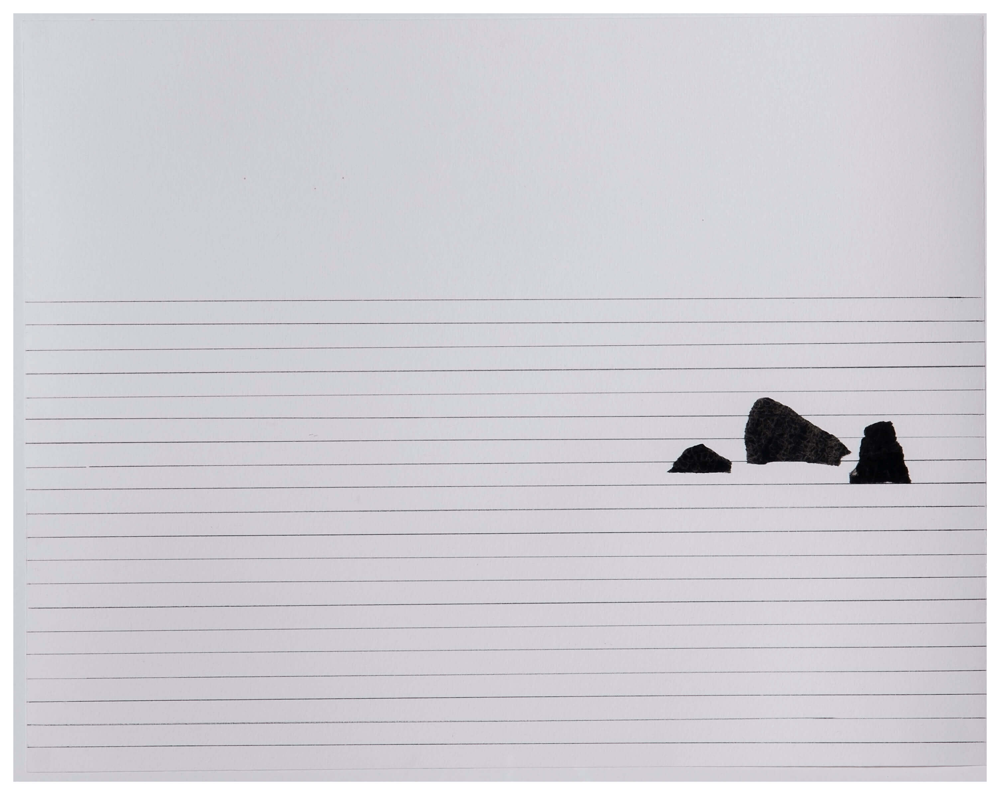
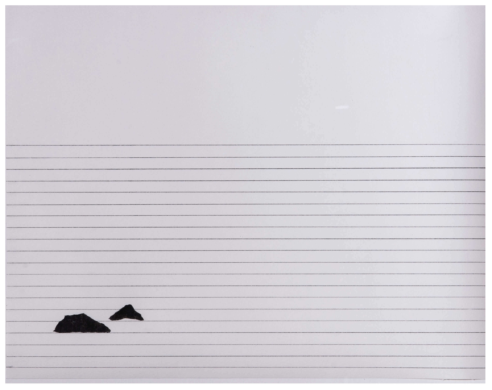
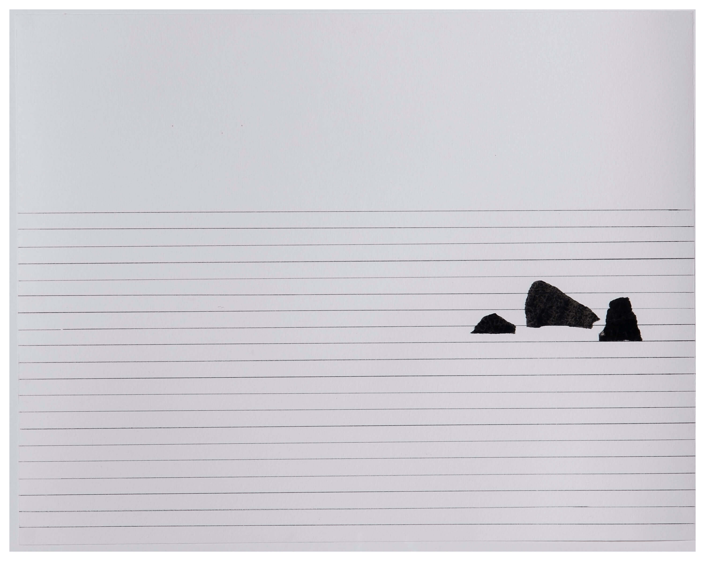

GALERIA
.jpg "Oblívio II, 2011 - Wagner Malta Tavares") 



, 2001 - Janaina Tschäpe")


 



, 2018 - Ana Sario")
 





Oblívio I, 2011 - Wagner Malta (São Paulo, 1964)
Fotografia, 78,5 x 118,5 cm
#PraCegoVer A obra é uma fotografia chamada Oblívio 1, que retrata o mar com muitas embarcações ofuscadas pela neblina e o céu com nuvens. A obra é apresentada ao lado de outra fotografia do artista, da mesma série, Oblívio 2.
Oblívio II, 2011 - Wagner Malta (São Paulo, 1964)
Fotografia, 78,5 x 118,5 cm
#PraCegoVer A obra é uma fotografia chamada Oblívio 2, que retrata o mar com apenas uma embarcação, a neblina e o céu com nuvens. A obra é apresentada ao lado de outra fotografia do artista, da mesma série, Oblívio 1.
Horizonte inebriante, pinga, 2013 - Marcia Xavier (Belo Horizonte, 1967)
Vidro, metal, água e imagem em backlight, 29 X 34,5 X 14 cm
#PraCegoVer A obra é composta por uma caixa de vidro transparente. Há dentro 5 garrafas também de vidro transparente, colocadas uma ao lado da outra, cheias de água em quantidades decrescentes da esquerda para a direita.
Através das garrafas, na parte de trás da caixa, é possível ver uma fotografia em cores que retrata uma paisagem litorânea, com céu e mar. Atrás da fotografia, uma lâmpada ilumina toda a obra.
Rooms, 2003-2006 - Lina Kim (São Paulo, 1965)
Lambda, print em metacrilato, 125 X 185 cm
#PraCegoVer A obra é uma fotografia em cores que retrata um cômodo com paredes em tons de amarelo e vermelho, com a pintura deteriorada e com marcas de bolor. Na parede central, há uma janela através da qual é possível ver a vegetação seca e cinza do lado de fora e uma casa ao fundo.
Branco Celeste, 2011 - Kilian Glasner - (Recife, 1977)
Pastel sobre papel, 163 X 358 cm
#PraCegoVer A obra é um desenho sobre papel, em que é possível ver na imagem um desenho em giz pastel preto sobre papel branco, dividido em três partes. Retrata uma pista de atletismo com vegetação dos dois lados, ao fundo, neblina e céu sem nuvens.
Sala de espera (Terrace), 2001 - Janaina Tschäpe (Munich, Alemanha, 1973)
impressão fotográfica cibachrome sobre papel, 103 x 154 x 3 cm
#PraCegoVer A obra é uma fotografia que retrata uma mulher nua, com asas que se assemelham às asas de um morcego. Ela está debruçada em uma varanda de um prédio, de costas para o observador. A paisagem observada é composta por um segundo prédio branco, com dezenas de janelas. Não é possível ver o chão nem o céu.
View of the Stour near Flatford, 2015 - Jaqueline Vojta (Petrópolis, 1966)
Impressão em papel algodão, 60 X 60 cm
#PraCegoVer A obra é uma fotografia em cores que retrata uma paisagem campestre com um rio, árvores no primeiro plano e ao fundo em tons de vermelho, verde e amarelo; grama verde, céu com nuvens acinzentadas.
Senhora do Irupé, 2014 - Fernando Lindote (Santana do Livramento, RS, 1960)
Óleo sobre tela, 160 X 150 cm
#PraCegoVer
A obra é uma pintura em tinta a óleo sobre tela, que retrata uma paisagem em vários tons de verde. No canto esquerdo, centralizado, encontra-se uma árvore grande, com o tronco largo e vários galhos que se estendem até ocupar toda a parte superior da tela. Os galhos são de tamanhos variados, têm folhas finas e pequenas flores nas cores branco e laranja. Entre os galhos podemos ver o céu, também em tons de verde. No canto inferior esquerdo é retratada uma pedra grande que vai até o centro da obra, sobre essa pedra tem alguns galhos, folhas e pétalas das flores da árvore. No centro da pintura, entre a pedra e os galhos da árvore, existe um lago e nele uma grande vitória-régia. Acima, próximo ao tronco da árvore têm duas pequenas pedras e sobre uma delas uma figura não identificada.

Galpão gaveta, 2015 - Paulo Climachauska (São Paulo, 1962)
Diversos materiais em gaveta de metal pintada de laranja, 50 X 40 X 9 cm
#PraCegoVer A obra é composta por uma caixa de metal vermelha, com abertura de gaveta, exposta aberta sobre um cubo branco. Dentro da gaveta, uma pintura de 30 x 40 cm em tinta acrílica sobre tela de faixas de diversas cores que ondulam pelo espaço de forma orgânica. Ainda dentro da caixa, uma escultura de metal preto de 37 x 27 x 5 cm, cuja forma geométrica que remete à forma de dois esquadros vazados e um livro com capa de couro preto, com o título “O livro de areia” escrito em letras prateadas fechado por um elástico cinza escuro. A escultura e o livro são expostos em posição vertical dentro da gaveta, ao lado da pintura.
Sobre a caixa vermelha de metal, uma segunda caixa vermelha aveludada em 31 x 42 x 3 cm, coberta por um desenho criado a partir de números sobre papel, que remete a um espaço arquitetônico, um corredor. Colocado sobre o desenho, semiaberto, um livro de capa vermelha com o interior de espelhos. Em cada espelho estão impressos números na cor preta, de diversos tamanhos distribuídos pelo espaço.
Barquinho, 2000 - Mario Cravo Neto (Salvador, 1947-2009)
Impressão fotográfica sobre papel, 222 x 111 cm
#PraCegoVer A obra é composta por duas fotografias formando uma só imagem, que retrata uma paisagem litorânea, com areia, mar e céu. Do lado esquerdo, um pequeno barco flutua na água e do lado direito, algumas pessoas em fila, na areia, próximas à água.
Sem título, 2013 - Marianitta Luzzati (São Paulo, 1963)
Óleo sobre tela, 260 X 190 cm
#PraCegoVer A obra é uma pintura em tinta a óleo sobre tela, que retrata uma paisagem com duas montanhas: uma em primeiro plano na cor preta e em segundo plano, outra em um tom um pouco mais claro. O fundo da pintura é feito em uma cor marrom acinzentada. Toda a pintura parece ter passado por um processo de “lavagem”, fazendo com que a imagem perca nitidez.
Jaraguá do Sul – Plate 02, Santa Catarina, 2013 - Claudio Edinger (Rio de Janeiro, 1952)
Pigmento mineral, 150 X 120 cm
#PraCegoVer A obra é uma fotografia que retrata uma paisagem coberta por vegetação em tons escuros de verde. A imagem é focada somente no centro da obra, onde há flores cor-de-rosa.
Sem título, Série Azul, 2012 - Claudia Melli (São Paulo, 1965)
Nanquim sobre vidro, 71 X 145 X 4 cm
#PraCegoVer
A obra é um desenho em nanquim sobre duas placas de vidro, que juntas formam uma paisagem em tons de cinza, que retrata o mar com pequenas ondas e o céu com muitas nuvens.
Bisso, ausência do negro IV, 2014 - Fabricio Lopez (Santos, 1977)
Carvão sobre papel, 130 X 150,5 cm
#PraCegoVer
A obra é um desenho de uma paisagem feita em carvão sobre papel branco.
Lagoa, 2001, Série Clichê Rio - Edu Simões (São Paulo, 1956)
Impressão Fotográfica, 18 x 18 cm
#PraCegoVer
A obra é uma fotografia em preto e branco, feita na cidade do Rio de Janeiro. Em primeiro plano ocupando grande parte da imagem, a figura de uma embarcação em forma de cisne, no segundo plano, a lagoa e ao fundo uma paisagem que mistura elementos urbanos e montanhas, inclusive o pão de açúcar.
Aterro do Flamengo, Tataré, 2011, Série Clichê Rio - Edu Simões (São Paulo, 1956)
Impressão Fotográfica, 18 x 18 cm
#PraCegoVer
A obra é uma fotografia em preto e branco, retratando uma grande árvore, cujos galhos ocupam toda a parte superior da imagem. Ao fundo, mais árvores e do lado direito é possível ver algumas partes do céu.
Pouligen, 2011 - Marcelo Moscheta (São José do Rio Preto, 1976)
Grafite sobre PVC, ferro e pedras, 226 X 268 X 70 cm
#PraCegoVer
A obra é composta por duas placas retangulares de PVC na cor preta, com molduras metálicas presas uma à outra, medindo no total 185,5 x 251 cm. Nelas há um desenho de uma paisagem em grafite. As duas placas estão apoiadas em 3 pilhas de pedras no chão de dimensões e formatos variados.
Ensaios para ver a terra, 2014 - Pedro Hurpia (Brasília, 1976)
Óleo sobre nanquim sobre papel, 66 X 72 cm
#PraCegoVer
A obra reúne 8 pinturas de 9 x 14 cm e 1 desenho de 18 x 13 cm, organizadas em 3 fileiras de 3, sobre fundo branco. Cada pintura retrata uma paisagem com montanhas e o próprio artista. O desenho, retrata uma montanha sobre um mapa topográfico em estilo 3D no lado direito inferior.
Garota na janela,1972 - Cristiano Mascaro (Catanduva, 1944)
Impressão em papel CansonInfinity - 36 x 24 cm
#PraCegoVer
A obra é uma fotografia que retrata uma paisagem urbana, do lado esquerdo o recorte de duas janelas de um prédio em primeiro plano, no parapeito da janela inferior, uma mulher deitada ao Sol. Ao fundo, do lado direito, um prédio ainda em construção com homens trabalhando no topo.

Sem título (série Polaroid), 2018 - Ana Sario (São Paulo, 1984)
Óleo sobre madeira, 10,5 x 10,5 cm (cada) / conjunto com 24 obras.
#PraCegoVer
A obra é composta por 24 pequenas pinturas que imitam a estética das fotografias polaroid, em que a artista pinta molduras na cor branca em torno das diversas cenas retratadas, entre paisagens, formas geométricas e imagens abstratas. As pinturas são apresentadas lado a lado.
Para Cézanne, 2016 - Ana Sario (São Paulo, 1984)
Óleo sobre linho, 19 x 27 cm
#PraCegoVer
A obra é uma pintura sobre linho que retrata uma paisagem rural, com pinceladas expressivas, em que é possível ver em primeiro plano algumas plantações em diferentes tons de verde, amarelo e laranja. Ao fundo, uma montanha e o céu.
Paisagem Seca, 2008 - Laura Belém (Belo Horizonte, 1974)
Carbono e colagem s/papel, 42 X 51 cm cada
#PraCegoVer
A obra é uma colagem sobre papel branco, em que é possível ver o desenho de 21 linhas horizontais, em grafite, que ocupam dois terços de sua parte inferior. Sobre as linhas há uma colagem de três formas pequenas centralizadas à esquerda, que remetem ao formato de pedras na cor preta.
Paisagem Seca, 2008 - Laura Belém (Belo Horizonte, 1974)
Carbono e colagem s/papel, 42 X 51 cm cada
#PraCegoVer
A obra é uma colagem sobre papel branco, em que é possível ver o desenho de 21 linhas horizontais, em grafite, que ocupam dois terços de sua parte inferior. Sobre as linhas há uma colagem de duas formas pequenas, que remetem ao formato de pedras na cor preta.
Coleta de Neblina, 1994-2001 - Brigida Baltar - (Rio de Janeiro, 1959)
Projeto umidades, impressão fotográfica sobre papel, 70 X 100 cm
#PraCegoVer
A obra é uma fotografia que retrata uma paisagem com muita neblina, em que é possível ver grama e a presença de uma pessoa em pé, do lado direito, vestida de branco.
Horizonte do desassossego, 2018 - Detanico Lain (Angela Detânico, Caxias do Sul, 1974 e Rafael Lain, Caxias do Sul, 1973)
Impressão digital sobre papel olin blanc naturel 170 gramas, dimensões variáveis
#PraCegoVer
A obra é apresentada em um balcão onde 2 placas de acrílico transparente são unidas por um laço preto. Abaixo delas, são colocadas 12 pequenas folhas de papel de 23 x 16 cm, na cor branca com frases impressas na cor preta, em diferentes posições longitudinais no papel. As páginas são alinhadas pelo texto, formando uma linha reta com o seguinte excerto:
De vago o azul meio-negro do horizonte. ao horizonte que se revela, como um beijo de gratidão das coisas. Porque essa um azul que vem talvez do cinzento das pedras. Ao fundo do horizonte será horizonte inteiro, quem me diz que não estranharia a cama, ou a comida, ou de luz pálida começa a tirar a sombra do horizonte. Felizmente, o que vai raiar estava virado, o horizonte era já de um branco verde. edifícios que estavam de encontro ao horizonte do estio. horizonte de ambulante. Avanço lentamente, morto, e a minha visão já não é Outras vezes este quarto estreito é apenas uma cinza de bruma no horizonte daqueles montes últimos no horizonte haveria alguma coisa de real, de mere- Orlas de mares desconhecidos tocavam, no horizonte de ouvirmos, praias oceano tremia-se até onde o horizonte leste se entristecia, e onde, pondo pe-